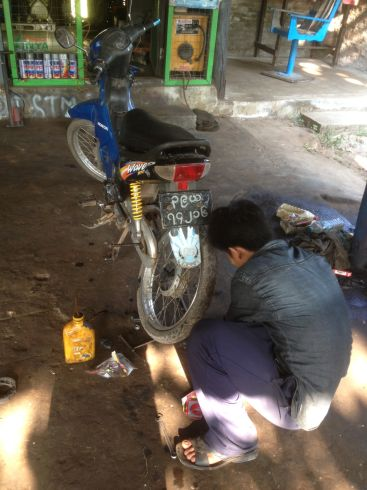

Maturity of teams working on data
The way towards continuous processing
- Everyone in the team must have a good workstation
- Use version control
- Script the whole workflow from scratch
- Tests should be automatic too
- Don't update data, augment it !
- Use a build system for your data
- Continuous processing is like refill
Agenda
Everyone in the team must have a good workstation
- a good internet connection
- a lot of RAM and (fast) disk
- a scriptable command line
- ... for every team member, even testers !
Would you repair this ?

in here ?
Use version control
- eg : git
- even for a hackathon !
- commit your doc
Script the whole workflow from scratch
How many city per departement ?
.mode tabs
.import comsimp2015.txt city
.import depts2015.txt departement
CREATE INDEX idx_city on city (DEP, COM);
CREATE INDEX idx_dept on departement (DEP);
.mode csv
.output result.csv
SELECT departement.DEP, departement.NCCENR AS DEP_NAME, COUNT(*)
FROM departement
JOIN city ON city.DEP = departement.DEP
GROUP BY departement.DEP, departement.NCCENR;
How many city per departement ?
What will happen if there is an error in the second index ?
set -e
wget http://www.insee.fr/fr/methodes/nomenclatures/cog/telechargement/2015/txt/depts2015.txt
wget http://www.insee.fr/fr/methodes/nomenclatures/cog/telechargement/2015/txt/comsimp2015.zip
unzip comsimp2015.zip
sqlite3 cities.sqlite <<$script$
.headers ON
.mode tabs
.import comsimp2015.txt city
.import depts2015.txt departement
CREATE INDEX idx_city on city (DEP, COM);
CREATE INDEX idx_dept on city (DEP); -- <-- error here
.mode csv
.output result.csv
SELECT departement.DEP, departement.NCCENR AS DEP_NAME, COUNT(*)
FROM departement
JOIN city ON city.DEP = departement.DEP
GROUP BY departement.DEP, departement.NCCENR;
$script$
How to deal with errors ?
-
3 ways to re-run what have failed :
- Comment the sources
- Reset everything before you start
- Run each step under condition
Comment the part that have already run - DON'T !
set -e
# wget http://www.insee.fr/fr/methodes/nomenclatures/cog/telechargement/2015/txt/depts2015.txt
# wget http://www.insee.fr/fr/methodes/nomenclatures/cog/telechargement/2015/txt/comsimp2015.zip
# unzip comsimp2015.zip
sqlite3 cities.sqlite <<$script$
.headers ON
.mode tabs
-- .import comsimp2015.txt city
-- .import depts2015.txt departement
-- CREATE INDEX idx_city on city (DEP, COM);
CREATE INDEX idx_dept on departement (DEP);
.mode csv
.output result.csv
SELECT departement.DEP, departement.NCCENR AS DEP_NAME, COUNT(*)
FROM departement
JOIN city ON city.DEP = departement.DEP
GROUP BY departement.DEP, departement.NCCENR;
$script$
Reset everything before you start - Painfull
rm cities.sqlite
rm depts2015.txt
rm comsimp2015.zip
set -e
wget http://www.insee.fr/fr/methodes/nomenclatures/cog/telechargement/2015/txt/depts2015.txt
wget http://www.insee.fr/fr/methodes/nomenclatures/cog/telechargement/2015/txt/comsimp2015.zip
unzip comsimp2015.zip
sqlite3 cities.sqlite <<$script$
.headers ON
.mode tabs
.import comsimp2015.txt city
.import depts2015.txt departement
CREATE INDEX idx_city on city (DEP, COM);
CREATE INDEX idx_dept on departement (DEP);
.mode csv
.output result.csv
SELECT departement.DEP, departement.NCCENR AS DEP_NAME, COUNT(*)
FROM departement
JOIN city ON city.DEP = departement.DEP
GROUP BY departement.DEP, departement.NCCENR;
$script$
Conditional execution
set -e
if [ ! -e depts2015.txt ]; then
curl -O "http://www.insee.fr/fr/methodes/nomenclatures/cog/telechargement/2015/txt/depts2015.txt"
fi
if [ ! -f comsimp2015.zip ]; then
curl -O "http://www.insee.fr/fr/methodes/nomenclatures/cog/telechargement/2015/txt/comsimp2015.zip"
fi
if [ ! -f comsimp2015.txt ]; then
unzip comsimp2015.zip
fi
if ! echo "SELECT * FROM city LIMIT 0;" | sqlite3 cities.sqlite 2> /dev/null ; then
sqlite3 cities.sqlite <<$script$
.mode tabs
.import comsimp2015.txt city
CREATE INDEX idx_city on city (DEP, COM);
$script$
fi
if ! echo "SELECT * FROM departement LIMIT 0;" | sqlite3 cities.sqlite 2> /dev/null ; then
sqlite3 cities.sqlite <<$script$
.mode tabs
.import depts2015.txt departement
CREATE INDEX idx_dept on departement (DEP);
$script$
fi
if [ ! -f result.csv ]; then
sqlite3 cities.sqlite <<$script$
.headers ON
.mode csv
.output result.csv
SELECT departement.DEP, departement.NCCENR AS DEP_NAME, COUNT(*)
FROM departement
JOIN city ON city.DEP = departement.DEP
GROUP BY departement.DEP, departement.NCCENR;
$script$
fi
Forces to structure the code around chunks of data
Tests should be automatic too
- test existence
- test quantities
- test integration
- be creative !
Example : test quantities (and existance)
if ! echo "SELECT * FROM departement LIMIT 0;" | sqlite3 cities.sqlite 2> /dev/null ; then
sqlite3 cities.sqlite <<$script$
.mode tabs
.import depts2015.txt departement
CREATE INDEX idx_dept on departement (DEP);
$script$
NB_DEPS=`echo "SELECT COUNT(*) FROM departement;" | sqlite3 cities.sqlite`
if [ $NB_DEPS -lt 100 ] ; then
echo "More than 100 departement expected but $NB_DEPS found"
exit 1
fi
fi
Don't update data, augment it !
- example with files and SQL
- how much disk is worth an hour of your time ?
It's worth duplicating some data if you get rollback
Use a build system for your data
- collaboration gets automatic
- eg : make, Drake, ex-continuous-processing or tuttle
- focus on tuttle
Continuous processing
- Update the data as soon as a team member commits a change in code
- Update the data when source data changes
- Can be operated by tools like Jenkins
It's is like your phone battery !
- The normal state is when every process is complete
- Reprocess what have changed as soon as you can
- You should never have to reprocess all... Unless there is a major issue
- It will have an impact on how you structure your project
Conclusion : Improve continuously
- software engineering is a good source of inspiration...
- ... like agile methods
- retrospectives helps your team find your its ways of improvement
Vertical Slides
Slides can be nested inside of each other.
Use the Space key to navigate through all slides.
Basement Level 1
Nested slides are useful for adding additional detail underneath a high level horizontal slide.
Basement Level 2
That's it, time to go back up.
Slides
Not a coder? Not a problem. There's a fully-featured visual editor for authoring these, try it out at http://slides.com.
Point of View
Press ESC to enter the slide overview.
Hold down alt and click on any element to zoom in on it using zoom.js. Alt + click anywhere to zoom back out.
Touch Optimized
Presentations look great on touch devices, like mobile phones and tablets. Simply swipe through your slides.
Fragments
Hit the next arrow...
... to step through ...
... a fragmented slide.
Fragment Styles
There's different types of fragments, like:
grow
shrink
fade-out
fade-up (also down, left and right!)
current-visible
Highlight red blue green
Transition Styles
You can select from different transitions, like:
None -
Fade -
Slide -
Convex -
Concave -
Zoom
Themes
reveal.js comes with a few themes built in:
Black (default) -
White -
League -
Sky -
Beige -
Simple
Serif -
Blood -
Night -
Moon -
Solarized
Slide Backgrounds
Set data-background="#dddddd" on a slide to change the background color. All CSS color formats are supported.
Image Backgrounds
<section data-background="image.png">Tiled Backgrounds
<section data-background="image.png" data-background-repeat="repeat" data-background-size="100px">Video Backgrounds
<section data-background-video="video.mp4,video.webm">... and GIFs!
Background Transitions
Different background transitions are available via the backgroundTransition option. This one's called "zoom".
Reveal.configure({ backgroundTransition: 'zoom' })Background Transitions
You can override background transitions per-slide.
<section data-background-transition="zoom">Pretty Code
function linkify( selector ) {
if( supports3DTransforms ) {
var nodes = document.querySelectorAll( selector );
for( var i = 0, len = nodes.length; i < len; i++ ) {
var node = nodes[i];
if( !node.className ) {
node.className += ' roll';
}
}
}
}
Code syntax highlighting courtesy of highlight.js.
Marvelous List
- No order here
- Or here
- Or here
- Or here
Fantastic Ordered List
- One is smaller than...
- Two is smaller than...
- Three!
Tabular Tables
| Item | Value | Quantity |
|---|---|---|
| Apples | $1 | 7 |
| Lemonade | $2 | 18 |
| Bread | $3 | 2 |
Clever Quotes
These guys come in two forms, inline:
“The nice thing about standards is that there are so many to choose from”
and block:
“For years there has been a theory that millions of monkeys typing at random on millions of typewriters would reproduce the entire works of Shakespeare. The Internet has proven this theory to be untrue.”
Intergalactic Interconnections
You can link between slides internally, like this.
Speaker View
There's a speaker view. It includes a timer, preview of the upcoming slide as well as your speaker notes.
Press the S key to try it out.
Export to PDF
Presentations can be exported to PDF, here's an example:
Global State
Set data-state="something" on a slide and "something"
will be added as a class to the document element when the slide is open. This lets you
apply broader style changes, like switching the page background.
State Events
Additionally custom events can be triggered on a per slide basis by binding to the data-state name.
Reveal.addEventListener( 'customevent', function() {
console.log( '"customevent" has fired' );
} );
Take a Moment
Press B or . on your keyboard to pause the presentation. This is helpful when you're on stage and want to take distracting slides off the screen.
Much more
- Right-to-left support
- Extensive JavaScript API
- Auto-progression
- Parallax backgrounds
- Custom keyboard bindings